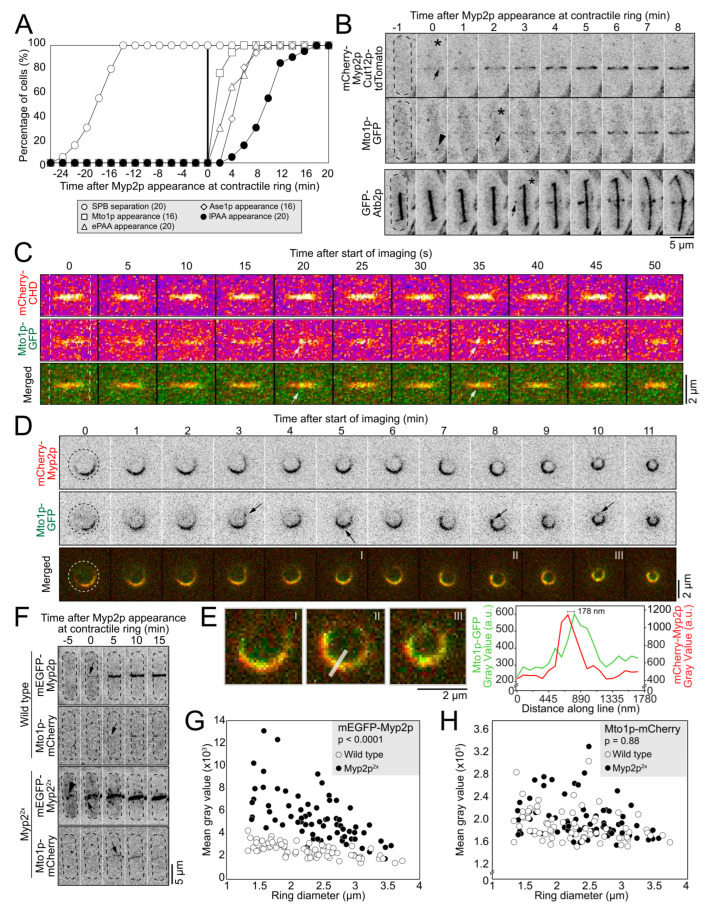

equatorial microtubule organizing center
A microtubule organizing center formed by a band of gamma-tubulin that is recruited to a circumferential band of F-actin at the midpoint of a cell and which nucleates microtubules from the cell division site at the end of mitosis. [GO:0000923]

NCBITaxon:4896) · Kimberly Bellingham-Johnstun, Zoe L. Tyree, Jessica Martinez-Baird, Annelise Thorn, Caroline Laplante; CC BY, via PubMed Central · CC_BY_4_0 · source: PMC PMC10047812.1 cells-12-00917-f001 · DOI:10.3390/cells12060917Synonyms: EMTOC; equatorial microtubule organising centre
Part of: GO:0032153 — cell division site (no local record)
Components
| Component | Type | Part of / acts on | Grounding | Genes | Stoichiometry | Essential | Role |
|---|---|---|---|---|---|---|---|
| Mto1-like microtubule nucleation adaptor | Protein | part of | Reviewed label only (reviewed name; no accession asserted) | mto1 | UNKNOWN | Equatorial adaptor supporting recruitment of the gamma-tubulin nucleation machinery.
| |
| Mto2-like microtubule nucleation adaptor | Protein | part of | Reviewed label only (reviewed name; no accession asserted) | mto2 | DISPENSABLE | Resident Mto1 partner supporting efficient gamma-tubulin-complex recruitment and sustained nucleation; residual equatorial activity can remain without it.
| |
| gamma-tubulin complex | Protein complex | part of | GO:0000930 | alp4 | UNKNOWN | Nucleating subcomplex recruited to equatorial sites; Alp4 is an experimentally imaged subunit.
| |
| Alp7-like microtubule-associated protein | Protein | part of | Reviewed label only (reviewed name; no accession asserted) | alp7 | UNKNOWN | Equatorial TACC-like component supporting Alp14 recruitment to microtubule organizing centers.
| |
| XMAP215 | Protein | part of | InterPro:IPR045110 | alp14 | UNKNOWN | Resident microtubule polymerase-family component with a contribution to nucleation, represented here by Alp14.
| |
| Rsp1-like DnaJ-related cochaperone | Protein | acts on | Reviewed label only (reviewed name; no accession asserted) | rsp1 | UNKNOWN | MTOC-associated turnover machinery supporting equatorial-center disassembly after cytokinesis.
|
Organism-specific protein examples
Named proteins in which each component's role was established, with the organism the evidence comes from. The component above is the taxon-agnostic family; these are the specific entries behind it.
Mto1-like microtubule nucleation adaptor
| Accession | Protein | Gene | Organism | Entry |
|---|---|---|---|---|
UniProtKB:O94488 | Gamma tubulin complex adapter mto1 | mto1 | Schizosaccharomyces pombe 972h- (NCBITaxon:284812) | REVIEWED |
Role and evidence (2 references)Reference-sequence exemplar for species-level experiments; no assertion that this exact reference stock was imaged.
| ||||
Mto2-like microtubule nucleation adaptor
| Accession | Protein | Gene | Organism | Entry |
|---|---|---|---|---|
UniProtKB:Q9USP7 | Gamma tubulin complex adapter mto2 | mto2 | Schizosaccharomyces pombe 972h- (NCBITaxon:284812) | REVIEWED |
Role and evidence (3 references)Reference-sequence exemplar for species-level experiments; no assertion that this exact reference stock was imaged.
| ||||
gamma-tubulin complex
| Accession | Protein | Gene | Organism | Entry |
|---|---|---|---|---|
UniProtKB:Q9Y705 | Spindle pole body component alp4 | alp4 | Schizosaccharomyces pombe 972h- (NCBITaxon:284812) | REVIEWED |
Role and evidence (3 references)Alp4 is one imaged subunit and reporter, not an accession for the entire complex. Reference-sequence exemplar for species-level experiments; no assertion that this exact reference stock was imaged.
| ||||
Alp7-like microtubule-associated protein
| Accession | Protein | Gene | Organism | Entry |
|---|---|---|---|---|
UniProtKB:Q9URY2 | Microtubule protein alp7 | alp7 | Schizosaccharomyces pombe 972h- (NCBITaxon:284812) | REVIEWED |
Role and evidence (3 references)Reference-sequence exemplar for species-level experiments; no assertion that this exact reference stock was imaged.
| ||||
XMAP215
| Accession | Protein | Gene | Organism | Entry |
|---|---|---|---|---|
UniProtKB:O94534 | Spindle pole body component alp14 | alp14 | Schizosaccharomyces pombe 972h- (NCBITaxon:284812) | REVIEWED |
Role and evidence (2 references)Reference-sequence exemplar for species-level experiments; no assertion that this exact reference stock was imaged.
| ||||
Rsp1-like DnaJ-related cochaperone
| Accession | Protein | Gene | Organism | Entry |
|---|---|---|---|---|
UniProtKB:O13601 | DnaJ-related protein rsp1 | rsp1 | Schizosaccharomyces pombe 972h- (NCBITaxon:284812) | REVIEWED |
Role and evidence (2 references)Reference-sequence exemplar for species-level experiments; no assertion that this exact reference stock was imaged.
| ||||
Canonical examples
NCBITaxon:4896Schizosaccharomyces pombe — Equatorial assembly in late mitosis/cytokinesis, distinct from the spindle pole body and interphase nucleation sites. No fungal-wide distribution is inferred. [DOI:10.1016/j.cub.2010.10.006]
Functions
- microtubule nucleation by microtubule organizing center
GO:0051418— Nucleates microtubules of the post-anaphase array from the cell division site.DOI:10.1016/j.cub.2010.10.006Equator-selective Mto1 targeting defects eliminate post-anaphase microtubules without eliminating spindle-pole nucleation.DOI:10.3390/cells12060917Time-resolved imaging links equatorial Mto1 recruitment to post-anaphase microtubule production.
Mechanism graphs
Recruitment at the division site (ASSEMBLY)
Perturbation-defined recruitment dependencies in S. pombe, not a purified binding pathway. The F-actin/Myp2 ring context is external to the nucleation-center core; Mto2 loss permits weak residual assembly.
| Subject | Predicate | Object | Evidence |
|---|---|---|---|
| Contractile-ring F-actin | supports | Mto1-like microtubule nucleation adaptor |
|
| Myp2 in the contractile ring | supports | Mto1-like microtubule nucleation adaptor |
|
| Mto1-like microtubule nucleation adaptor | supports | gamma-tubulin complex |
|
| Mto2-like microtubule nucleation adaptor | supports | gamma-tubulin complex |
|
| gamma-tubulin complex | supports | equatorial microtubule organizing center |
|
Production of the post-anaphase array (FUNCTION)
Equatorial nucleation and its microtubule output, not a claim that the output is the whole center or that it is universally required for cytokinesis.
| Subject | Predicate | Object | Evidence |
|---|---|---|---|
| equatorial microtubule organizing center | supports | microtubule nucleation by microtubule organizing center |
|
| microtubule nucleation by microtubule organizing center | generates | post-anaphase microtubule array |
|
Rsp1-dependent center turnover (DISASSEMBLY)
Genetic dependence reported in the accessible primary abstract. Molecular interfaces and a complete chaperone reaction at the equator remain unresolved; no interphase lattice mechanism is transferred here.
| Subject | Predicate | Object | Evidence |
|---|---|---|---|
| Rsp1-like DnaJ-related cochaperone | supports | equatorial microtubule organizing center disassembly |
|
| equatorial microtubule organizing center disassembly | disassembles | equatorial microtubule organizing center |
Discussions
- CURATION_TODO (RESOLVED): Distinguish the equatorial assembly from other MTOCs and its microtubule output. Parsed identifiers, labels and synonyms from all 903 pre-existing records and hidden/ignored-inclusive name, accession and citation searches found no duplicate identity. GO:0000923 exactly names this center. GO:0005815 is its parent and GO:0032153 its division-site whole. GO:1990295 has-part this center but names the larger post-anaphase array; that class-level existential is not inverted into universal eMTOC part-of PAA. MULTIPROTEIN_COMPLEX describes the resident nucleation assembly, not a single purified stoichiometric complex.
- CURATION_TODO (RESOLVED): Keep ring context, spindle-pole scaffolds and output microtubules separate from the core. F-actin and Myp2 supply upstream contractile-ring docking context. Their recruitment dependencies do not make the entire contractile ring an eMTOC component. Sid4/Cdc11 targeting evidence in the 2010 paper concerns spindle poles, not this equatorial assembly. Alpha/beta tubulin and Ase1 occur in the nucleated array rather than establishing core eMTOC membership. Mto1/Myp2 offset and dosage results limit a simple direct-coassembly model without excluding indirect association.
- CURATION_TODO (OPEN): Find exact source-neutral whole-protein mappings for four label-only classes. Complete InterPro matches were inspected for Mto1 O94488, Mto2 Q9USP7, Alp7 Q9URY2 and Rsp1 O13601. Domains and superfamilies are not whole-protein family equivalents. Rsp1 has a broad family annotation, but no exact mapping to the narrower class is adopted. Mto2's empty API response is not absence of homologs; divergent fungal homologs are discussed in the 2015 primary study. Alp14 uses the verified XMAP215 family, not a TOG domain.
- CURATION_TODO (RESOLVED): Separate assembly, recruitment, activity and maintenance phenotypes. Mto2 deletion can leave faint Alp4 recruitment, very limited nucleation or an early array that fails to persist. A failure to detect equatorial gamma-tubulin in another assay is not proof of zero molecules. Alp7/Mia1 mutants retain initial equatorial markers despite maintenance defects. The accessible Rsp1 abstract reports persistent asters in loss-of-function mutants, not demonstrated assembly in the complete absence of Rsp1. Rsp1 assembly essentiality therefore remains UNKNOWN, separately from its supported turnover role. Unknown assembly essentiality remains UNKNOWN for the other classes; no cell-viability phenotype is substituted for assembly necessity.
- CURATION_TODO (RESOLVED): Do not transfer interphase or engineered-system mechanisms to the equator. Alp7 and Alp14 equatorial localization is direct evidence, but bonsai construct nucleation frequencies, interphase satellite dwell times and forced GBP recruitment are not native eMTOC measurements. The 2025 Klp2/Rsp1/Ssa1 study resolves a microtubule-lattice pathway; it does not directly establish the same reaction at an equatorial center. Klp2 and Ssa1 are therefore not imported as universal eMTOC members. Mto2 phosphorylation quantification in the 2015 paper excluded eMTOC-bearing cells. No equator-specific phosphoregulation graph or native copy number is inferred.
- KNOWLEDGE_GAP (OPEN): Resolve the molecular disassembly reaction at equatorial centers. The rsp1 loss-of-function phenotype supports turnover dependence. Satellite redistribution and chaperone-based breakup remain models in the accessible 2004 account; the 2025 lattice experiments do not by themselves close this site-specific gap.
- CURATION_TODO (RESOLVED): Keep inferred ring mechanics distinct from universal cytokinesis requirements. The 2023 selective mto1-427 perturbation changes inferred contractile-ring stiffness without a measurable cytokinesis or anchoring defect under its tested conditions. Stiffness estimation assumes unchanged initial tension; mutant recoil did not plateau, limiting fitted parameters. Earlier anchoring experiments used cytokinesis delay or actin perturbation. Those contexts are retained rather than declaring a universal requirement or an unexplained contradiction. Array counts and offsets are not universal eMTOC dimensions.
- CURATION_TODO (RESOLVED): Preserve organism, source-access and measurement limits. Only S. pombe is a canonical example. Protein accessions identify the reference strain, not every experimental stock. The 2004 Rsp1 paper and 2006 Mia1 paper were not read in full; two 2005 papers were accessible as indexed primary Results, not complete Methods. No unverified trait, exact Complex Portal equivalent, direct structural dataset, exhaustive composition or fixed copy number is supplied. The native GO definition is an identity definition, not an independent new quantitative experiment.
Evidence
GO:0000923Native non-obsolete cellular-component identity, definition, synonyms, is-a MTOC and part-of cell division site verified through OAK on 2026-10-06.DOI:10.1016/j.cub.2010.10.006PMID 20970338; native PMC2989437.1 Results and Discussion read. Selective Mto1 targeting and Myp2/actin dependencies are the principal assembly evidence.DOI:10.1242/jcs.038414PMID 19001497; native PMC2743986.1 Results and relevant Methods read. Residual equatorial activity limits all-or-none interpretations of Mto2 dependence.DOI:10.1091/mbc.E04-11-1003PMID 15659644, PMC1142446; accessible indexed primary Results and captions read, not complete Methods or supplements.DOI:10.1091/mbc.E04-12-1043PMID 15800064, PMC1142447; accessible indexed primary Results read. Detection and cytokinesis-delay contexts differ from later selective-targeting experiments.DOI:10.1016/j.cub.2018.04.008PMID 29779879; native PMC7263743.1 Results, Discussion, STAR Methods and Figures 3/6 captions read. Direct equatorial localization is distinct from interphase bonsai nucleation quantification.DOI:10.1016/s1534-5807(04)00096-6PMID 15068790; primary abstract accessible, full Results and Methods not read. Used for the genetic turnover dependency, not a fully resolved biochemical mechanism.DOI:10.3390/cells12060917PMID 36980258; native PMC10047812.1 Results, Discussion, Methods and Figure 1 caption read; original Figure 1 inspected after native checksum verification.
Curation history
2026-10-06T03:09:14Zcodex · CREATED_RECORD — Scaffolded by scripts/new_record.py2026-10-06T03:11:17Zcodex · EXPANDED_RECORD — Added six source-bounded component classes with verified protein examples, three causal graphs, a checksum-verified CC BY 4.0 primary figure, and explicit identity, access, essentiality and mechanism limits.2026-10-06T03:13:21Zcodex · CORRECTED_EVIDENCE_ATTRIBUTION — Separated the reported Alp4 localization readouts for Mto1 truncations from mto1-427 targeting/nucleation results; removed shared serialization aliases without changing other claims.2026-10-06T03:16:15Zcodex · EXPOSED_RENDERED_EVIDENCE_LIMITS — Exposed the existing three graph scope paragraphs and eight discussion rationales through renderer-supported fields, without changing claims, citations, graph edges or the shared template.2026-10-06T03:42:24Zcodex · BOUNDED_ASSEMBLY_ESSENTIALITY — Addressed PR 2088 review issue 2089: set Rsp1 assembly essentiality to UNKNOWN and distinguish loss-of-function persistence from assembly without the protein; retained the supported turnover dependency.
Source: data/structures/cytoskeleton/equatorial_microtubule_organizing_center.yaml